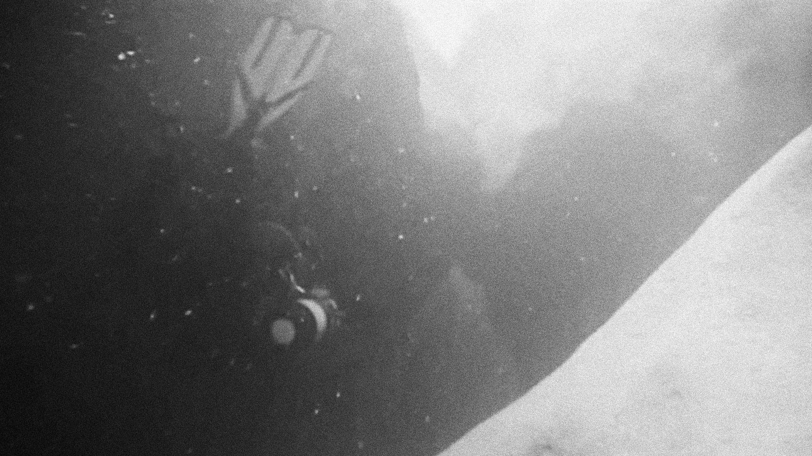
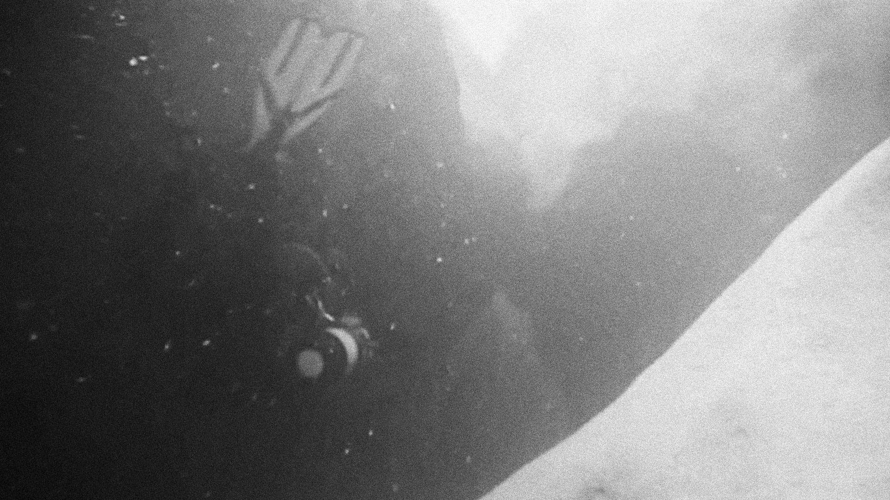
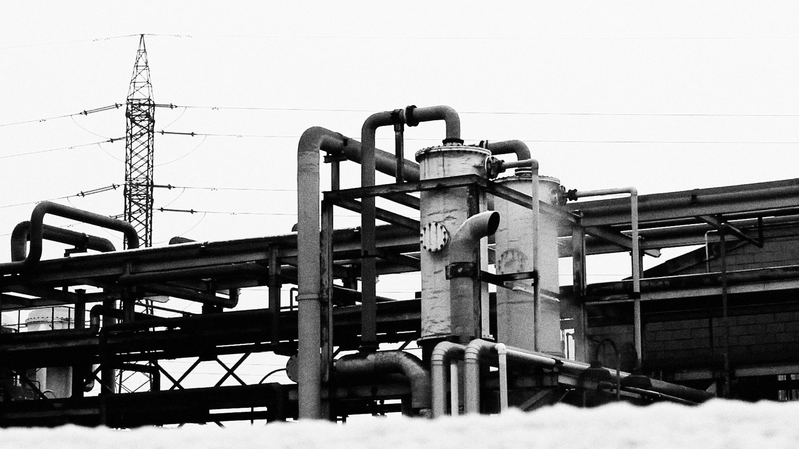
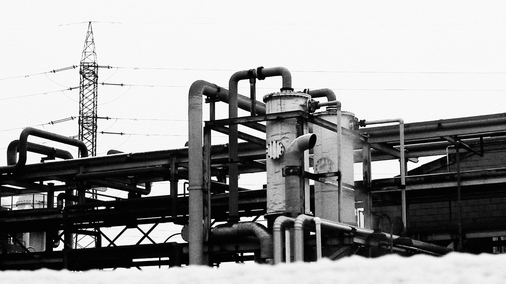
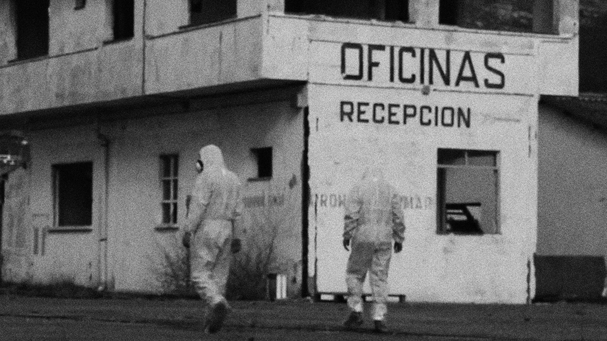
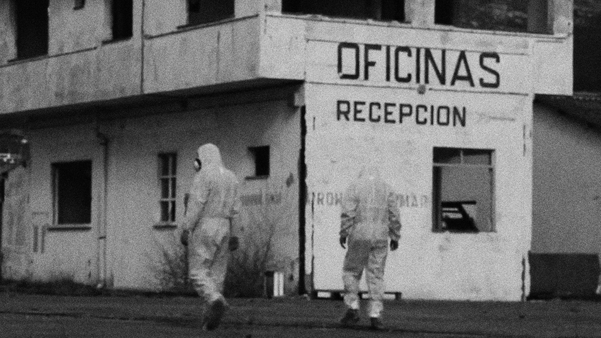
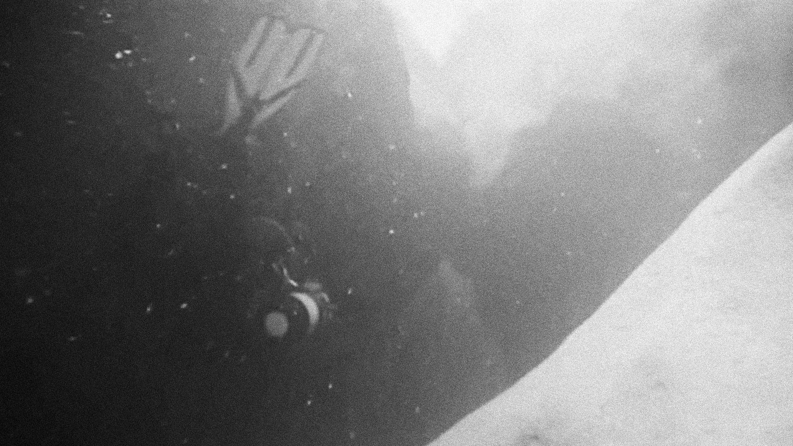
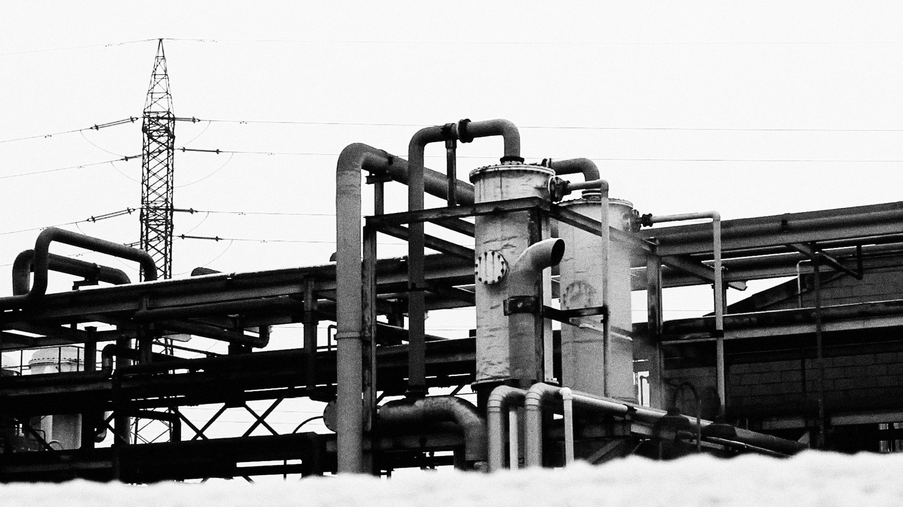
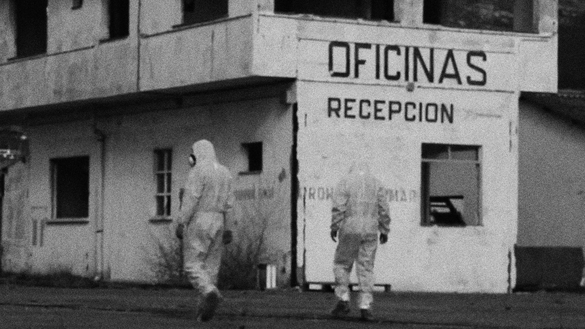

 


 



In the summer of 2014, a chemical catastrophe was unearthed along the Gallego river.
I teamed up with some filmmakers and cameramen to explore the problem’s roots, and turn them into a documentary.
The final result opened one of Ecozine’s screening halls, our capital’s top environmental film festival.
Since then, I kept working with them in the making of a second documentary centered around the melting of the glaciers from the Pyrenees and other video production works.


